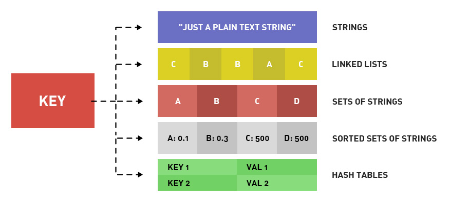

Redis data types are divided into: string type, hash type, list type, set type, sorted set type.
Redis is so popular; how fast does it run? An ordinary laptop can complete 100,000 read/write operations in one second.
Atomic operation: the smallest unit of operation that cannot be further split. That is, the smallest execution unit that will not be interrupted by other commands. Under high concurrency, there is no race condition.
KEY naming: A good suggestion is to use article:1:title to store the title of the article with ID 1.

I. Introduction
- 1. Get the list of keys: KEYS pattern. Wildcards include ? * [] and escape \.
- 2. Whether a key exists: EXISTS key. Returns 1 if it exists, 0 if it does not.
- 3. Create a key and delete a key: SET key and DEL key.
- 4. Get the Redis data type stored by the key based on the key: TYPE key. The return is string, list, hash, set, zset. Below we will explain these 5 returned Redis data types one by one.
- 5. rename oldkey newkey: Rename the key. If newkey exists, it will be overwritten.
- 6. renamenx oldkey newkey: Rename the key. If newkey exists, it will not be overwritten.
- 7. randomkey: Randomly return a key.
- 8. move key db-index: Move the key to the specified database. If the key does not exist or is already in that database, return 0. Return 1 on success.
II. Redis Data Types Redis Data Commands
1. Redis Data Type 1: String Type: This is easy to understand; one key stores one string. What if you want to store data? Convert it to JSON or another string serialization.
2. Redis Data Commands 1: String Type:
- 1) Assignment: SET key value. E.g., set hello world
- 2) Retrieval: GET key. E.g., get hello. The return is world
- 3) Increment: INCR key. This is MySQL's AUTO_INCREMENT. Each time INCR key is executed, the value of that key increases by 1. If the key does not exist, first create a 0, then +1, returning 1. If the value is not an integer, an error is reported. This operation is atomic.
- 4) Decrement: DECR key. Decreases the value of the specified key by 1. For example, DECR num means num-1
- 5) Increment by N: INCRBY key increment. Used to add increment to the value of the specified key. For example, INCRBY num 5 means num+5
- 6) Decrement by N: DECRBY key increment. Used to subtract increment from the value of the specified key. For example, DECRBY num 5 means num-5
- 7) Increase by a float: INCRBYFLOAT key increment.
- 8) Append to the end: APPEND key value. For example, set test:key 123, append test:key 456, get test:key gives 123456
- 9) Get the length: STRLEN key.
- 10) Assign values to multiple keys at the same time: MSET title This is the title description This is the description content This is the content.
- 11) Get the values of multiple keys at the same time: MGET title description content
- 12) Bit operation - get: GETBIT key offset. For example, the character a is stored as 01100001 (ASCII 98) in Redis, then GETBIT key 2 returns 1, GET key 0 returns 0.
- 13) Bit operation - set: SETBIT key offset value. For example, the character a is stored as 01100001 (ASCII 98) in Redis, then SETBIT key 6 0, SETBIT key 5 1, then get key returns b. Because the binary retrieved is 01100010.
- 14) Bit operation - count: BITCOUNT key [start] [end]. BITCOUNT key is used to get the number of bits that are 1 in the value of the key. BITCOUNT key start end is used to count the number of bits that are 1 in the binary of the substring between start and end in the key's value (so confusing).
- 15) Bit operation - bitwise operations: BITOP operation resultKey key1 key2. operation is a bitwise operation, including AND, OR, XOR, NOT. resultKey stores the operation result in that key. key1 and key2 are the keys involved in the operation. Multiple keys can be specified for the operation.
3. Redis Data Type 2: Hash Type:
Redis stores data in the form of a dictionary (associative array), where one key corresponds to one value. In the string type, the value can only be a string. Then in the hash type (also called the hash type), the value also corresponds to a dictionary (associative array). So it can be understood that in Redis's hash type/hash type, the value corresponding to a key is a two-dimensional array. But the values of the fields can only be strings. That is, it can only be a two-dimensional array, and cannot have more dimensions.
4. Redis Data Commands 2: Hash Type:
- 1) Assignment: HSET key field value. E.g., hset user name lane. hset user age 23
- 2) Retrieval: HGET key field. E.g., hget user name returns lane.
- 3) Assign values to multiple fields of the same key: HMSET key field1 value1 field2 value2...
- 4) Get values of multiple fields of the same key: HMGET key field1 fields2...
- 5) Get all fields and all values of the key: HGETALL key. For example, HGETALL user returns name lane age 23. Each return is on a separate line.
- 6) Whether a field exists: HEXISTS key field. Returns 1 if it exists, 0 if it does not.
- 7) Assign a value when the field does not exist: HSETNX key field value. If the field under the key does not exist, create the field with the value. If the field exists, no operation is performed. Its effect is equivalent to HEXISTS + HSET. But the advantage of this command is that it is an atomic operation. No matter how high the concurrency, there is no need to fear.
- 8) Increment by N: HINCREBY key field increment. Same as the string increment type, no further elaboration.
- 9) Delete fields: DEL key field1 field2... Deletes one or more fields of the specified key.
- 10) Get only field names: HKEYS key. Similar to HGETALL, but only gets field names, not field values.
- 11) Get only field values: HVALS key. Similar to HGETALL, but only gets field values, not field names.
- 12) Get the number of fields: HLEN key.
5. Redis Data Type 3: List Type
The list type stores an ordered list of strings. Common operations are inserting new elements at both ends. The time complexity is O(1). The structure is a linked list, recording the addresses of the head and tail. Seeing this, a major role of the Redis data type's list type is about to emerge, that is, a queue. New requests are inserted at the tail, and processed ones are deleted from the head. In addition, for example, Weibo's fresh news. For example, logs. The list type is an array with indices starting from 0. Because it is stored as a linked list, the closer to the head and tail, the faster the operation; the closer to the middle, the slower.
6. Redis Data Commands 3: List Type:
- 1) Insert at the head: LPUSH key value1 value2... Returns the length of the list after the increase.
- 2) Insert at tail: RPUSH key value1 value2... . Returns the length of the list after adding.
- 3) Pop from head: LPOP key. Returns the value of the popped element. This operation first removes the first element of the key list, then returns it.
- 4) Pop from tail: RPOP key. Returns the value of the popped element.
- 5) Number of list elements: LLEN key. Returns 0 if key does not exist.
- 6) Get a sublist of the list: LRANGE start end. Returns the list of elements from the start-th to the end-th, inclusive of start and end. Supports negative indices. -1 represents the last element, -2 represents the second-to-last element.
- 7) Delete specified values in the list: LREM key count value. Deletes all elements with value equal to value in the list of key, but only count elements are deleted. If there are count+1, then the last one is kept. If count does not exist or is 0, delete all. If count > 0, delete count elements from head to tail; if count < 0, delete count elements from tail to head.
- 8) Get the value at the specified index: LINDEX key index. For example, LINDEX key 0 gets the first element of the list. index can be negative.
- 9) Set the index and value: LSET key index value. This operation only modifies the value at the specified index for the given key. If index does not exist, an error is reported.
- 10) Keep a slice and delete the rest: LTRIM key start end. Keeps all elements between start and end, inclusive of start and end. Deletes all others.
- 11) Insert an element into a list: LINSERT key BEFORE/AFTER value1 value2. Traverse from the head of the list, stop when a value equal to value1 is found, then insert value2, either before or after value1 depending on BEFORE or AFTER.
- 12) Move an element from one list to another: RPOPLPUSH list1 list2. Removes the rightmost element of list1 and inserts that element into the left side of list2. Atomic operation.
7. Redis Data Type 4: Set Type:
The set type is designed for convenient operations and calculations on multiple sets. Each element in a set is unique and has no concept of order; each element is and can only be a string. Common operations are insertion, deletion, membership testing, etc. The time complexity is O(1). It supports intersection, union, and difference operations. For example, article 1 has 3 tags, stored as a Redis set type. Article 2 has 3 tags, stored as a Redis set type. Article 1 is about MySQL, and article 2 is about Redis. Then doesn't the intersection produce a database? (assuming the tag "database" exists in both articles). A set type in Redis is stored as a hash table with null values.
8. Redis Data Commands 4: Set Type:
- 1) Add: SADD key value.
- 2) Delete: SREM key value.
- 3) Get all elements of the specified set: SMEMBERS key.
- 4) Check whether an element exists: SISMEMBER key value.
- 5) Difference operation: SDIFF key1 key2... . Performs difference operation on multiple sets.
- 6) Intersection operation: SINNER key1 key2... . Performs intersection operation on multiple sets.
- 7) Union operation: SUNION key1 key2... . Performs union operation on multiple sets.
- 8) Get the number of elements in a set: SCARD key. Returns the total number of elements in the set.
- 9) Store the result of difference, intersection, or union operation in a specified key: SDIFFSTORE storekey key1 key2. Computes the difference between key1 and key2, and stores the result in the set with key storekey. SINNERSTORE and SUNIONSTORE are similar.
- 10) Get random elements from a set: SRANDMEMBER key [count]. The parameter count is optional; if count is not provided, returns one random element. If count > 0, returns count distinct elements. If count < 0, returns a total of |count| elements, with duplicates allowed.
- 11) Randomly pop an element: SPOP key. Randomly pops an element from the set, removes it, and returns the value of that element.
9. Redis Data Type 5: Sorted Set Type:
The set type is unordered, and each element is unique. A sorted set, on the other hand, is ordered, and each element is unique. The difference between the sorted set type and the set type is that the sorted set assigns an attribute to each element: score. The sorted set is sorted by score. The sorted set is implemented using hash tables and skip lists. Therefore, compared with lists, operating on middle elements is also very fast. The time complexity is O(log(N)). In Redis data types, the sorted set type consumes more resources than the list type.
10. Redis Data Commands 5: Sorted Set Type
- 1) Add: ZADD key sorce1 value1 sorce2 value2... .
- 2) Get score: ZSCORE key value. Gets the score of the element with value value in the sorted set of key.
- 3) Get the list of elements ranked within a range: ZRANFGE key start stop [WITHSCORE]. Gets the list of elements whose rank is between start and end, inclusive of start and end. Each element is on one line. If the WITHSCORE parameter is included, then one line for the element value and one line for the score. Time complexity is O(log n + m). If scores are the same, then 0<0.
- 4) Get elements within a specified score range: ZRANGEBYSCORE key min max [WITHSCORE] [LIMIT offset count]. Gets the list of elements with scores between min and max, inclusive of both ends. Each element is on one line. If the WITHSCORE parameter is included, then one line for the element value and one line for the score. If min is greater than max, the order is reversed.
- 5) Increase the score of an element: ZINCRBY key increment value. The score of the element with value value in the specified sorted set is incremented by increment. Returns the score after the change.
- 6) Get the number of elements in the set: ZCARD key.
- 7) Get the number of elements within a specified score range: ZCOUNT key min max.
- 8) Delete one or more elements: ZREM key value1 value2...
- 9) Delete elements by rank range: ZREMRANGEBYRANK key start end. Deletes elements ranked between start and end.
- 10) Delete elements by score range: ZREMRANGEBYSCORE key min max.
- 11) Get the rank of an element (ascending): ZRANK key value. Gets the rank of value in the set from smallest to largest.
- 12) Get the rank of an element (descending): ZREVRANK key value. Gets the rank of value in the set from largest to smallest.
- 13) Intersection of sorted sets: ZINTERSTORE storekey key1 key2...[WEIGHTS weight [weight..]] [AGGREGATE SUM|MIN|MAX]. Used to compute the intersection of multiple sets, with the result stored in storekey. The return value is the number of elements in storekey. If AGGREGATE is SUM, then the score of each element in the storekey set is the sum of the scores from the participating sets. MIN is the minimum of the participating scores. MAX is the maximum of the participating scores. WEIGHTS sets the weight for each set, e.g., WEIGHTS 1 0.1. Then each element score of set A is multiplied by 1, and each element score of set B is multiplied by 0.1.
- 14) Union of sorted sets: ZUNIONSTORE storekey key1 kye2...[WEIGHTS weight [weight..]] [AGGREGATE SUM|MIN|MAX]
Click me to share notes
<p style="font-size:14px;">Notes need to be an extension of the content of this article!</p><br> <p style="font-size:12px;"><a href="../tougao.html" target="_blank">To submit an article, click here</a></p> <p style="font-size:14px;"><a href="./runoob-user-test-intro.html" target="_blank">How to obtain a registration invitation code</a></p> <h3 class="text-muted"><i class="fa fa-info-circle" aria-hidden="true"></i> Before sharing notes, you must <a href=".." class="runoob-pop">log in</a>!</h3> <p><a href="./runoob-user-test-intro.html" target="_blank">How to obtain a registration invitation code</a></p>